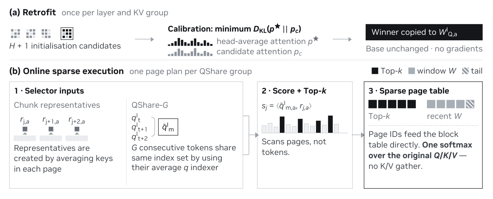
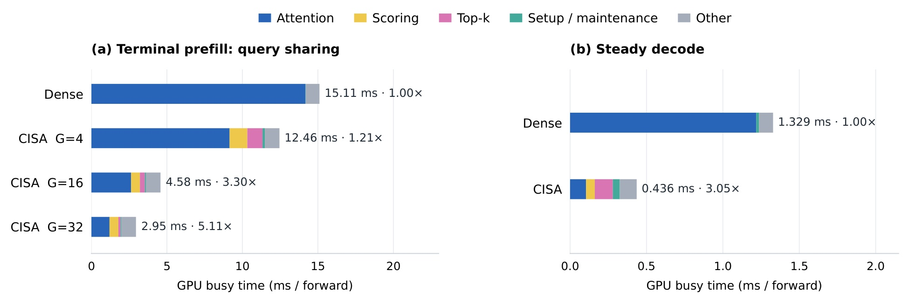
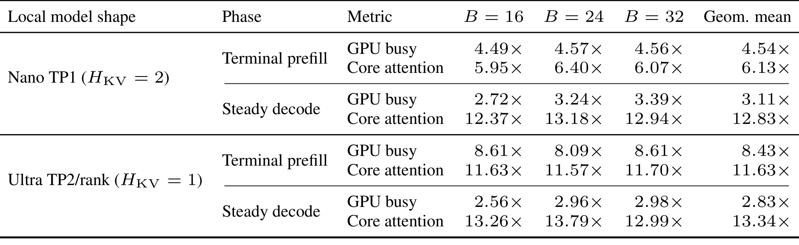
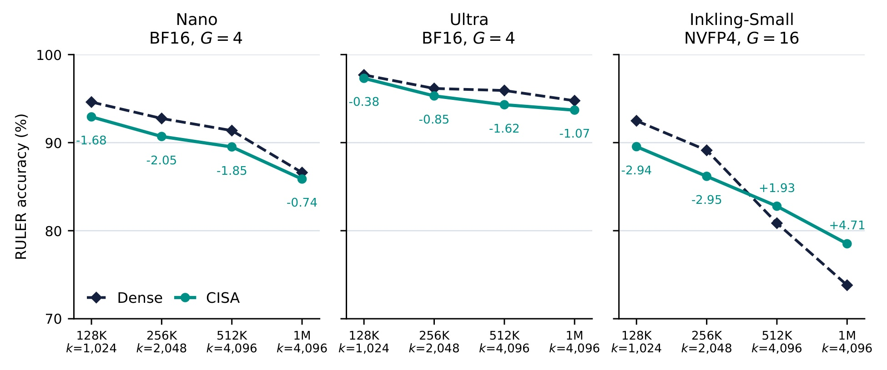
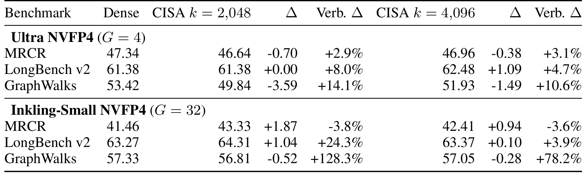
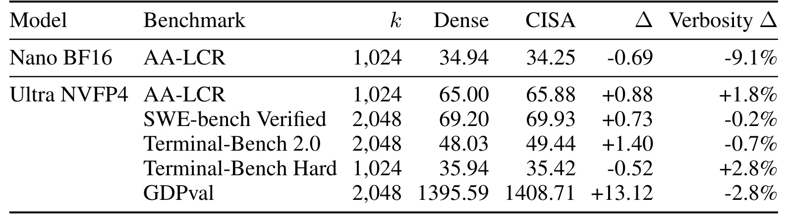
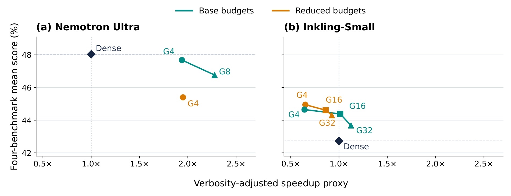
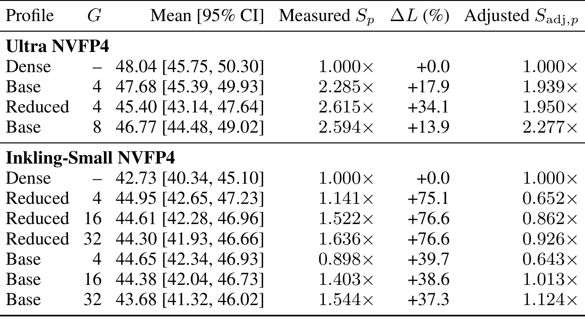
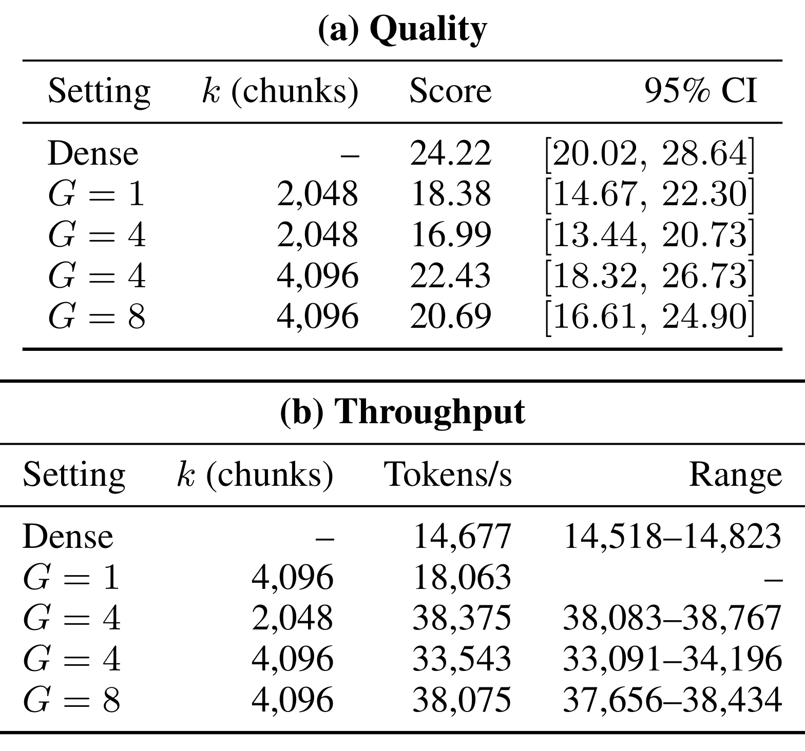
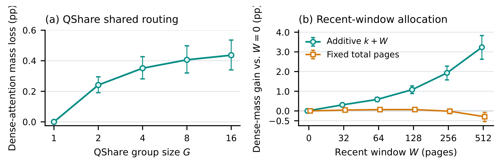

CISA：用块索引稀疏注意力改造既有稠密模型
Mohammed Dabbah、Izhak Golan、Oren Tropp 等 NVIDIA 研究者提出 CISA，讨论怎样在不更新基础模型权重的情况下，让长上下文推理少读一部分历史 KV。论文于 2026 年 11 月 2 日首次提交，本文按原始全文、主文和附录实验精读。论文链接：arXiv:2611.03200。本轮未核验到独立代码或项目入口，不据此宣称已经开源。
上下文越长，注意力就越需要反复读取不断增长的 KV 历史。少算一些 query–key 点积仍可能被索引扫描、低效的 KV 访问和硬件利用率抵消；改造已有稠密模型必须同时守住任务质量与实际执行效率。
1. 背景和问题
长上下文模型让代码仓库、长期对话和百万 token 文档可以一起进入模型，但“放得下”和“处理得快”之间仍有距离。自回归生成每来一个新 query，注意力都需要访问历史 key、计算权重，再读取 value 聚合输出。随着历史增长，重复的数据搬运越来越重。在长输入、高并发条件下，这种开销会直接限制预填充时间、解码速度和服务器吞吐。CISA 针对的是这一条注意力访问路径，而不是减少模型的总参数或缩短输入文本。因此，理解本文首先要把基础模型计算、KV 存储容量、KV 读取流量和实际请求完成成本分开。
传统精确注意力优化已经在做这件事的一部分。FlashAttention 通过分块执行减少中间结果的读写，PagedAttention 则让不连续的物理 KV 页能够服务连续的逻辑序列。这些技术改变执行和管理方式，但仍可能需要读取全部可见历史。稀疏注意力进一步提出，只读取当前 query 真正需要的部分历史。问题在于，要知道哪些部分重要，本身就要付出索引或路由成本。如果对每个 token 建索引，百万长度仍可能要求扫描百万条索引；如果不同查询头各自选页，同一份共享 KV 会被不同页集合反复读取，理论节约就不能直接转化为 GPU 时间收益。
这正是本文与简单“取最大的若干注意力位置”做法之间的区别。现代模型广泛采用分组查询注意力，同一 KV 头被多个 query 头共享。若每个 query 头独立形成稀疏计划，它们可能读到不同历史页，降低共享数据的复用率。对于 GPU kernel，另一个限制是工作块形状：一次选中的 KV 能服务多少 query 行，决定矩阵分块是否充分填满。即使历史读取量相同，查询头数量和位置共享方式不同，实测时间也可以差很多。因此，本文把“选择单位”和“执行复用单位”一起设计，而不只追求更精细的注意力近似。
另一条已有路线是从训练阶段就使用稀疏结构或学习索引器。这能让模型适应稀疏访问，却增加持续训练、校准和能力回归验证的成本。实际团队可能已经有一个效果合格的稠密模型，希望直接改造服务路径，尽量减少训练和模型发布成本。CISA 的定位正是这种部署场景：保留基础模型的原始 Q、K、V 和权重，用已有 key 的压缩摘要召回历史块，并从已有 query 投影中挑选索引器。它不做梯度训练，但仍需要校准数据和激活，不能理解为完全无数据、无准备成本的转换。
这里的“块”不是一个语义段落或一个检索文档，而是固定数量的连续 token。论文默认每块十六个 token，并让块大小匹配 vLLM 的 KV 页大小。这样召回得到的逻辑块可以映射为物理页 ID，现有注意力 kernel 就能原位读取，而不用先把离散选中的 KV 收集到新缓冲区。这个选择牺牲了一定 token 级选择精度，却使索引规模、元数据规模和 KV 访问方式更容易对齐。对比专门训练的稀疏网络，CISA 更像对既有全局注意力层增加一条可配置访问策略。
本文改造对象也不是同一种纯 Transformer。Nano 和 Ultra 是混合 Mamba–Transformer MoE 模型，Inkling-Small 则混合全局注意力、滑动窗口注意力、MoE 和短卷积。全文附录给出，Nano 共五十二个块，其中六层为全局注意力；Ultra 一百零八个块，其中十二层为全局注意力；Inkling-Small 四十二层中七层为全局注意力，其余三十五层采用滑动窗口。CISA 替换的是这些全局注意力路径，其他组件继续运行。这意味着注意力单层加速的上限不能直接当作整模型加速，也不能把某个模型上的最佳共享参数直接搬给另一个模型。
对推荐和个性化系统，最接近的落点是长用户历史、长会话和大候选上下文的模型服务。它提示我们，序列摘要或稀疏读取不只是建模问题，还要看历史内容如何落在缓存页上、哪些查询能共享一次召回，以及漏掉信息后是否出现偏好推断失真。不过，本文没有推荐数据集、点击率或线上推荐实验，不能把通用长上下文基准上的接近稠密结果写成推荐链路已经有效。尤其当一个低频行为决定用户的关键约束时，平均注意力质量接近不代表个别业务判断不会失败。
本文真正要回答的研究问题可以归纳为三层。第一，使用简单块摘要能否在固定预算下保留足够有用历史，而不必训练独立 token 索引。第二，将同 KV 组和相邻位置的选择合并，能否减少重复扫描并提高 kernel 利用率。第三，这种局部效率能否在任务质量、自然输出长度和整模型吞吐共同约束下仍然划算。论文的主张需要这三层证据共同成立；只看到“最高十三倍”这一层，会漏掉后面最关键的预算损失与生成变长现象。
检索基准的任务差异也决定这项优化应如何验收。RULER 更接近可控的信息查找与组合，MRCR 检查多轮指代和对话检索，GraphWalks 则要求沿图关系进行多跳推理。前两者在多数聚合配置下保持接近，并不自动覆盖第三类任务。多跳推理需要多处证据同时被读到，一条路径上的任何关键节点被漏召回，都可能造成非线性的答案损失。这里固定预算适合控制资源，却也使“平均保留概率质量”与“完整保留证据链”形成新的张力，必须把任务级失败纳入部署门槛。
此外，全文把权重精度和缓存精度分别说明。Ultra 的 NVFP4 是模型权重格式，相关长度分桶使用 BF16 KV，不能把结果误读为所有状态都已经四位化。选页减少的是这份历史缓存被访问的范围，低位权重改变的是另一条内存和计算路径。论文在混合模型上观察到的端到端收益，既依赖全局注意力占比，也依赖其他层、权重读取和输出行为；若换成短上下文或注意力占比更低的模型，相同稀疏预算可能产生完全不同的收益比例。
2. 方法
2.1 块召回与 KV 组共享
先从普通注意力的输入输出看起。单个 query 位置拥有当前 query 向量，以及因果范围内的全部 key 和 value。稠密注意力把相似度归一化后作为权重，对 value 做加权求和：
符号解释：$q_t$ 是位置 $t$ 的 query，$K_{1:t}$ 与 $V_{1:t}$ 分别堆叠可见历史的 key 和 value，$d$ 是注意力头维度，$o_t^{\mathrm{dense}}$ 为该头的输出。分母控制点积分数尺度，softmax 在因果可见位置之间形成概率分布。CISA 不改变聚合规则，而是改变进入聚合的历史集合，这使其近似误差主要来自“哪些位置未被读到”。 CISA 将序列按固定大小划为连续块，以每块 key 的均值作为摘要，并通过单独的索引 query 计算召回分数：
符号解释：$C$ 是每块 token 数，$C_j$ 是第 $j$ 个完整块，$k_u$ 为块内 key，$r_j$ 是块摘要，$q_t^I$ 为索引 query，$E_t$ 是可被远程召回的完整历史块集合。当前块的可见尾部和最近窗口另行保留，不参与远程预算竞争。摘要只用于选块，原始 key 的细节并没有被均值摘要替换。
符号解释：$S_t$ 是选中的远程块集合，$k_{\mathrm{chunks}}$ 是固定召回块数。若合格历史块少于预算，就全部保留。因此短历史或早期预填充位置会自然退回稠密访问，而不是为了稀疏强行丢弃仍可全部处理的上下文。预算单位是块，乘以每块 token 数才得到远程 token 容量，不能把四千零九十六块误解成四千零九十六个历史 token。
符号解释：$U_t$ 为实际参与注意力的位置集合，$W_t$ 是最近完整块窗口，$T_t$ 是当前块内因果可见部分，$K_{U_t}$ 和 $V_{U_t}$ 是这些位置的原始 KV。窗口和当前块保留局部信息，远程块预算覆盖更早历史。所有选中位置一起归一化，索引分数不会直接充当最终注意力权重，因此块选得相同也不意味着不同 query 头输出相同。 在 GQA 中，一组 query 头共享同一个 KV 组。CISA 为整个 KV 组使用一个索引 query，组内各头共享选中的块，但每个头继续用自己的原始 query 计算最终权重。这样把稀疏计划与 KV 的物理共享关系对齐，避免每个 query 头独立选页导致的重复加载。代价是一个选择计划必须兼顾组内多个头，不能保证满足所有头各自最理想的召回；后续投影校准就是为这个折中寻找较稳妥的起点。

Figure 1 上半部分对应离线改造：已有同组 query 投影及其平均形成候选，通过校准集比较后只复制胜出的投影，不回传梯度更新基础网络。下半部分是在线路径，左侧将页内 key 聚合为代表向量，并将相邻位置的索引 query 平均；中间对历史页摘要打分，输出固定数量页；右侧把远程 Top-k、近期窗口和当前页尾部合成稀疏页表，再直接交给原始注意力读取。图中的黑、灰、浅色块分别代表这些来源，不能把所有块都算入远程预算。最关键的信息流是“摘要负责选择，原始 KV 负责答案”，而不是先把用户历史压成摘要后只对摘要做注意力。由此既保留了被选中历史的细粒度表征，也保留了完整 KV 占用；后续 query 可以选不同页，但服务端并没有因此释放未被本次选中的历史。这个框架图解释了为什么索引更小仍不能直接宣称总体缓存容量压缩。
图上索引query来自模型投影而非额外训练网络，说明改造的自由度被刻意限制在已有表示之内；其校准更像候选选择，而不是学习一个全新检索空间。
2.2 QShare 与无梯度索引器初始化
同 KV 组共享还没有利用相邻 query 位置的相似性。预填充阶段同时拥有多个新位置，QShare 将这些位置划为不重叠的小组，在每组内平均索引 query，只进行一次历史召回：
符号解释：$G_m$ 是第 $m$ 个相邻 query 位置组，$a$ 是 KV 组，$|G_m|$ 为组内实际位置数，$q_{t,a}^I$ 是位置级索引 query。分组大小通常记为 $G$，最后一组可以不足这个数。召回候选只取组内各位置合格历史的交集，确保某一位置不能通过共享计划读取其未来信息；最终注意力仍施加位置专属因果 mask。因此，共享是对历史选择做摊销，而不是让不同位置互相越过因果边界。 为了从既有模型构造索引器，每个 KV 组列出本组各 query 头的投影，以及这些投影的逐行平均，总共形成“头数加一”个候选。校准目标不是平均 query 的注意力，而是各头注意力分布的平均：
符号解释：$H_a$ 是 KV 组 $a$ 所服务的 query 头集合，$H$ 为头数，$x$ 是校准序列，$p^{\star}$ 是该组各头对历史位置的平均概率分布。由于 softmax 非线性，“平均投影得到的分布”一般不等于这里的“各头分布平均”，所以不能省略候选比较，直接声称均值投影必然代表整个组。
符号解释：$\mathcal C_a$ 是候选投影集合，$\mathcal D_{\mathrm{cal}}$ 是校准样本与位置，$p^{(c)}$ 是候选投影在相同因果 key 上产生的分布，$c_a^{\star}$ 是 KL 最小候选。胜出投影被复制给索引器，基础模型权重保持不变。Ultra 的二十四个层与 KV 组组合中，二十三个选中了平均投影，这支持平均候选实用，却不是无需选择的数学证明，也不代表任何新模型都应固定采用平均值。 QShare 还存在明确适用范围。普通自回归解码每个序列一次只有一个新 query，所以位置共享大小实际上为一；同 KV 组各头仍可共享，但不能获得预填充跨位置的摊销。若未来结合多 token 预测或推测解码，才可能扩展这一维度，本文将其留作未来工作。工程上不能把预填充共享收益直接记入单 token 解码，也不能仅凭相邻位置平均就认定语义需求完全相同。
2.3 分页执行与访存模型
部署时，CISA 选择的块与缓存页等大，用现有块表将逻辑页映射到物理地址，再让 kernel 原位读取。完整块生成后只更新一次代表向量缓存，后续重复使用。代表维度与 key 维度相等时，每十六个 token 保存一份代表向量，其元素量约为原始 K 与 V 总和的三十二分之一；这是一份额外小缓存。历史主 KV 仍全部保留，因此它与驱逐缓存、丢弃旧历史或降低 KV 精度完全是不同的优化方向。
符号解释：$N$ 是历史长度，$d_I$ 是代表向量维度，$d$ 是注意力维度，$G$ 是位置共享大小，$\rho_{\mathrm{end}}$ 为预填充末尾单 query 的模型化读取量与稠密读取量之比。第一项是选中原始 KV 的读取，第二项是代表扫描摊销。这个近似忽略最近窗口、当前尾部、投影、元数据和缓存构建，描述的是流量，不是实测时间。
符号解释：$\alpha$ 为远程历史预算相对全长的比例，$\rho_{\mathrm{prefill}}$ 对完整因果预填充积分。早期位置历史尚未超过预算时仍读取全部历史，所以整段节约弱于最后几个位置。十六 token 块、相同索引与注意力维度、四位置共享下，八倍名义远程压缩得到末尾约七点五三倍流量估计，而整段只有四点一三倍；十六倍压缩则分别约十四点二二与七点七六倍。这些倒数不是实际 kernel 或整模型速度上界，硬件并行度和省略开销会进一步改变结果。 硬件几何决定共享是否充分发挥作用。Ultra 每个 KV 头对应三十二个 query 头，四位置共享可形成一百二十八行，正好填满实现采用的注意力分块；Inkling-Small 每 KV 头只有四个 query 头，四位置只有十六行，需要三十二位置共享才能同样填满。更大共享降低选择次数、提高复用，却可能让不同位置的召回需求被平均掉。论文因此把召回预算与共享粒度作为联合调参对象，而不是只追求最少历史读取。
3. 实验结果
3.1 单层加速必须拆开看组件
实验先用单层微基准检查系统机制，再用完整模型测任务与吞吐。Inkling-Small 微基准为单 B300、BF16、一百万左右历史、batch 十六、四千零九十六块预算。模型采用虚拟权重和对应局部头几何，省略 MoE、滑动窗口层以及完整 TP 通信；它适合定位注意力路径瓶颈，不适合替代真实服务的总成本测量。图中 GPU busy 统计 kernel、复制等事件区间的并集，不把重叠区间重复相加，也不等同含空闲等待的完整请求墙钟。

Figure 2 左侧横轴是每次 forward 的 GPU 忙碌毫秒数，彩色堆叠把核心注意力、代表打分、Top-k、维护和其他工作分开。稠密为十五点一一毫秒，四位置共享仍有十二点四六毫秒，只有一点二一倍；共享增到十六和三十二，分别下降到四点五八与二点九五毫秒，对应三点三零和五点一一倍。这个对比说明同样的远程预算下，kernel 形状与共享程度可以比继续减少读页更关键。右侧解码没有跨位置共享，稠密一点三二九毫秒对比零点四三六毫秒，约三点零五倍。图不能证明三十二共享在整模质量上最好，也不能把左侧预填充最佳值推广到解码。每个均值来自一次捕获中保留的十个 forward，重复运行的稳定性证据有限，后续仍需完整模型结果兜底。
堆叠中打分和选择没有随注意力一同消失，这也是四共享收益有限的重要原因。比较三种共享大小时预算不变，因而这组测量主要检验复用与算子利用，而不是扩大允许损失的历史范围。右侧的解码实现还对代表加载做了合并优化，不能把这个实现收益全部归给位置共享。

Table 10 把模型局部头几何、阶段、计时口径和三个 batch 大小分别列开，最右侧是跨 batch 几何平均。Ultra 在 batch 三十二时，预填充 core attention 为十一点七零倍，而 GPU busy 只有八点六一倍；解码 core 为十二点九九倍，GPU busy 降到二点九八倍。后者需要扫描和选择代表，不能靠核心 kernel 的高倍数覆盖。表中 Ultra TP2/rank 指单卡重现每 rank 的注意力维度，实验排除了 GPU 间通信，因此不是完整双卡模型吞吐。Nano 预填充加速较低，还与实现将本地两个 KV 组串行放到同一 CUDA stream 有关。这个表给出最直接的检查办法：任何“十三倍”宣传都应同时写清 core 的边界，并让读者看到包含其他 GPU 工作后约三倍的解码结果。
表的几何平均列还防止只挑最好batch：Ultra解码核心平均十三点三四倍，但全组件平均只有二点八三倍；Nano解码核心平均十二点八三倍，全组件三点一一倍。这些具体差距说明不同头形状的索引与维护成本占比不同。名义相同的十六倍远程历史压缩不会自动生成同样的计时结果，复现时必须同时保留batch与维度。
3.2 RULER 的预算匹配与跨长度变化
RULER 使用十三类子任务，各一百个样本，以近确定性采样检查长上下文信息处理能力。Nano 和 Ultra 使用 BF16、四位置共享，Inkling-Small 使用 NVFP4、十六位置共享。横向长度从一百二十八 K 到一 M，预算依次为一千零二十四、二千零四十八、四千零九十六、四千零九十六块。每次运行内部预算固定，但跨长度点并不是始终同一预算，因此不能把整条曲线当作只改变长度的单变量实验。

Figure 3 三个面板共享准确率尺度，深色是稠密、青色是 CISA，旁边数字为百分点差异。Nano 四个点分别落后一点六八、二点零五、一点八五和零点七四个百分点；Ultra 分别落后零点三八、零点八五、一点六二和一点零七个百分点。这里“在二点零五点内”指这八组配置，不是所有模型所有任务。Inkling-Small 在短两档落后二点九四和二点九五点，到长两档反而高出一点九三和四点七一点。这个反转可以说明稀疏化并不总带来负向点估计，但不能据此断言它恢复了更强的真实推理能力：预算、权重格式、共享和模型结构都参与了工作点。横轴下方预算标注不可省略，否则容易把更多预算带来的改善误写为长度增长天然有利。
论文用“远程历史读量八至十六倍减少”描述名义预算占比，还需要补充两个细节。一是最近窗口和当前块尾部是额外读取，真实总量不是远程预算那一项；二是完整 KV 仍驻留显存。对服务器来说，内存带宽更省与容纳更多并发并非同一结论。如果原本瓶颈是缓存容量，CISA 不能直接替代 KV 压缩；如果瓶颈是长历史重复读取，这组结果才更加对应其收益方向。
3.3 异质任务同时观察答案与输出长度
MRCR、LongBench v2 和 GraphWalks 使用相同任务与重复次数做稠密/稀疏配对，长上下文评测每任务四次重复，输出上限六万五千五百三十六 token。Ultra 使用四位置共享，Inkling-Small 使用三十二。两个固定远程预算分别对应三万二千七百六十八和六万五千五百三十六个历史 token，另加近期窗口。质量结果与生成长度来自同一批回答，是判断系统行为变化的重要补充。

Table 1 的行是任务、列是稠密基线与两个预算，每个预算同时报告绝对分数、百分点变化和生成长度相对变化。Ultra 的 MRCR 从四十七点三四变为四十六点六四或四十六点九六，差距不大；LongBench v2 为持平或高一点零九点。但 GraphWalks 从五十三点四二降为四十九点八四或五十一点九三，预算翻倍使差距从三点五九缩到一点四九点。Inkling-Small 的 GraphWalks 分数只低零点五二或零点二八点，看起来更接近，但对应输出长度增长百分之一百二十八点三和七十八点二。图表必须连着读：接近基线准确率可能消耗更长推理甚至重复生成，不能仅按得分宣布低成本保持能力。论文观察到部分回答耗尽输出预算，因此更长也不都等价于有效推理。
附录长度分桶进一步限制结论。Ultra NVFP4 在 GraphWalks 二百五十六至五百一十二 K 档，提高预算把差距从七点二四点收窄到一点七九点；到一 M 及以上，稠密自己只有百分之七点零八，大预算稀疏仍落后四点六二点。全体聚合差距一点四九并不代表最长最难案例都接近。LongBench v2 最长三个档分别只有十二、七和三十三个独立 prompt，重复生成不能当作同等数量独立问题，因此这几档更高或更低的点估计都要结合宽置信区间。部分 GraphWalks 中间长度桶为空，不能把缺失段填成平滑趋势。
3.4 一般能力的保持不是所有任务全胜
论文还检查长文理解、代码修复、终端任务和职业工作，不仅考察长历史检索。不同任务采用自己的预算及重复设置：例如 AA-LCR 一百任务十六重复，SWE-bench Verified 五百任务三重复，GDPval 二百二十任务两重复。不同指标的量纲必须保留，特别是职业评估的 Elo 不能当作百分比准确率。Nano 作为额外控制也没有在每项任务上都提供完整矩阵。

Table 2 中 Nano 的 AA-LCR 从三十四点九四降到三十四点二五，落后零点六九个百分点；Ultra 的 AA-LCR、SWE-bench Verified 和 Terminal-Bench 2.0 分别有正向点估计，而 Terminal-Bench Hard 从三十五点九四降到三十五点四二，负零点五二点。GDPval 从一千三百九十五点五九变为一千四百零八点七一，增加十三点一二 Elo。它说明多种能力没有出现统一的大幅崩塌，但不能推断这些小幅正向全有统计意义。两项终端评测使用上下文摘要，不能证明取消或保持压缩策略都同样有效。表内长度变化也不恒为负，能力评测的服务成本需要逐任务核算，而非引用一个平均 token 节约值。
职业任务分数经过失败调整，不能只挑成功完成任务计算Elo；附录说明所有二百二十个任务和每任务两次rollout都计入该口径。表的百分比分数只展示点估计，未为每一行都提供可证明正向的显著性结论。研究者若把这些行汇成一个总体保持比例，还必须先解决不同量纲、不同预算与不同上下文管理方式的差别。
3.5 从固定输出吞吐到自然完成成本
完整服务测量使用 MRCR 中最长的二百个 prompt，每个约一百万 token，并发三十二，每个请求固定生成四千零九十六 token。Ultra NVFP4 用四张 B300，配置为 TP2DP2；表中多配置吞吐平均三次独立分配，并记录观察范围。固定输入、固定输出让 token 吞吐可公平对比，但现实用户并不总在同一 token 数结束。论文因此补充一个对生成长度敏感的估计指标：
符号解释：$\mathcal B$ 是四基准集合，$\bar L_{p,b}$ 为配置 $p$ 在基准 $b$ 的平均输出长度，$R_p$ 为逐基准长度比的等权均值，$S_p$ 是固定输出实测吞吐相对稠密的倍数，$S_{\mathrm{adj},p}$ 为冗长度调整后的 proxy。它假设成本随输出长度线性增长，未建模前缀固定成本、非线性 batching 和评测工作负载差异，因而不能当成自然结束请求每秒数的实测结果。

Figure 4 纵轴是 RULER 1M、MRCR200、GraphWalks-200、AA-LCR 四项分数的等权均值，横轴是刚定义的调整 proxy。线连接同一预算配置随共享大小变化的点，不是连续可微优化轨迹。Ultra 基础预算四位置共享的质量接近稠密，提高到八位置共享可比直接减半预算获得更好的质量与调整速度组合。Inkling-Small 的点则提醒我们，原始吞吐更高未必代表最终成本更低：不同共享和预算下，生成变长可以把调整值推到一倍以下。图里若只保留右移或只保留纵向分数，会丢失选择工作点的理由。误差区间和不同任务的权重也影响这种均值比较，业务部署应重新确定质量约束与完成成本，而不是照搬这个四基准均值。
横轴还混合了两个不同实验来源：固定输出吞吐来自最长MRCR子集，长度比来自四种质量任务的自然生成。这个组合适合做敏感性分析，却不能替代同一真实工作负载上逐请求的成本统计。图中右移只能在这个近似定义下解释，不能写成所有自然请求都同比更快结束。

Table 7 给出散点的数值基础。Ultra 基础预算四共享的均分四十七点六八，对照稠密四十八点零四，固定输出吞吐二点二八五倍，长度增加百分之十七点九，调整后一点九三九倍。减半预算原始吞吐二点六一五倍，均分降为四十五点四零，长度增加百分之三十四点一，调整后一点九五零倍；多牺牲两点多质量只换来很小调整收益。保持基础预算而增为八共享，原始二点五九四倍、调整二点二七七倍，均分四十六点七七。Inkling-Small 三十二共享基础预算原始一点五四四倍，但调整后一点一二四；减半预算原始一点六三六，调整后零点九二六。这个表支撑的是质量、读取计划与回答行为需要一起调参，而不是所有配置都可取得二倍以上实际完成加速。
均分置信区间来自任务级重采样，区间相互重叠也提醒我们，小幅均分差别不足以建立严格性能排序。吞吐则是另一组控制测量，不能把均分区间误用作速度不确定性。尤其业务若更重视图推理，等权均值可能低估低预算的实际质量代价。
3.6 共享和近期窗口的边界证据
作者专门补充不做位置共享的配置，但质量与吞吐试验所用预算不相同。这个安排有助于了解各机制，却不能把来自不同配置的最好数字拼成一个新的质量成本点。无共享的一些评测还存在未完成重复、运行健康检查失败或早期实现修复后的结果排除，论文将其明确留在诊断层面，未强行纳入四基准主图。

Table 9 原论文本来就包含质量和吞吐两个面板，这里保留为一个原始表对象。上面 GraphWalks-200 的 G1 质量使用二千零四十八块，得分十八点三八，四共享同预算为十六点九九；四共享增预算为二十二点四三。下面 G1 吞吐却使用四千零九十六块，每秒一万八千零六十三 token，而稠密一万四千六百七十七，且 G1 只做一次分配、结果标为暂定。四共享大预算吞吐三万三千五百四十三，八共享同预算三万八千零七十五。由于上下不是同一预算和完整评测矩阵，不能宣称 G1 同时拥有前一面板质量和后一面板速度。它显示共享具有系统价值，也保留了低共享可能更精细选择的潜在优势，证据强度尚不支持一条普适最优规律。
无共享配置没有完整验证过的RULER结果，因此主图刻意不展示它的四任务均分。这比直接剔除失败运行后拼接最好指标更保守。表下的吞吐范围只是多次分配观察范围，也不是质量面板那样的任务bootstrap置信区间，不能将两者当成同一种统计证据。

Figure 8 使用六十四个保留的十三万一千 token 文档，检查注意力概率质量而不是最终回答分数。左图横轴共享组大小，纵轴是稠密注意力质量损失；四共享时平均保留独立逐位置选择页的百分之九十二点七，只损失零点三五个百分点的稠密注意力概率质量。右图比较加上近期窗口与在固定总页数下用近期页替换远程页：加一百二十八页的增益一点零八点，但固定总页数只剩零点零七点。由此，大部分增益可能来自多读页，而非近期页天然更优。配对 MRCR200 取消窗口的得分变化负零点三四点，百分之九十五区间跨零，也未明确识别质量收益。这里不能把路由代理质量直接换算为任务成功率，但它有效防止把额外预算的收益误归给特定窗口设计。
窗口对照还控制了读页总量，这一步很关键：如果不固定预算，任意增加一批页都可能改善覆盖，无法说明近期偏好本身有额外价值。两条曲线的差距使作者能把资源增加和路由规则分开，而不是把观察到的概率质量增加全部归为结构创新。
4. 总结
CISA 的贡献在于把块级召回、从稠密模型初始化的组级索引、同 KV 组共享、位置共享和原位分页执行连成完整系统。它没有证明简单均值摘要在所有任务都足够好，而是给出一组质量接近与效率改善可同时出现的工作点。最值得保留的阅读结论是：稀疏注意力的选择粒度必须与 GPU 复用粒度相容，核心 kernel 的高倍数只有经过全组件与整模测量才具有部署意义。 Ultra 和 Inkling-Small 对共享大小的不同需求，为这条判断提供了具体例子。
这项工作对长历史用户建模有可迁移的实验思路。可以先将已有全局注意力层作为改造对象，固定模型和输入，比较全历史、块召回、KV 组共享和位置共享；再检查关键偏好、时间约束和低频事实是否因召回遗漏而受损。不过这只是研究建议，本文没有证明推荐业务收益。对个性化 Agent，还应单独监测自然回答长度、重复生成和遗漏用户限制，因为准确率基本持平但多生成一倍内容，可能让成本目标失效，也可能影响用户体验。
需要保留的局限至少有四项。第一，无梯度不等于无数据，索引投影依赖校准激活，校准分布变化可能改变候选优劣。第二，完整主 KV 保留并增加小摘要缓存，不能解决缓存容量本身不足的情况。第三，预算越小不一定越划算，Ultra 的困难多跳任务与 Inkling 的输出增长已给出实际反例。第四，实验覆盖两类模型家族、一个服务栈和有限预算网格，局部头几何微基准还省略通信及其他模型层，不能向任意 GPU、任意并发与任意模型外推。第五，一些最长分桶问题数很少，正负点估计都需要重复和区间证据，不能把全体均值当作每个长度的保证。
后续复现优先做三件事。首先，在目标服务硬件上固定长度、并发、精度、输出数量和 TP 布局，分别记录核心注意力、索引、选择、元数据、通信以及完整墙钟，复查局部节约是否落到请求延迟。其次，在真实自然结束条件下测每秒完成任务数与每任务生成 token，用实测补上本文线性长度 proxy 没覆盖的 batching 和前缀摊销。最后，围绕召回预算与位置共享做二维质量约束搜索，保留最难分桶、关键事实查询和重复生成诊断；若未来结合推测解码，也要单独验证多位置共享是否保持分支和因果语义。
我的判断是，这篇论文更适合作为一次完整稠密模型稀疏改造的设计与证据清单，而不是一个孤立加速倍数。它把读流量、硬件利用、答案质量和输出行为放在同一张成本账里，尤其公开了看起来速度更快却可能自然完成成本更差的配置。这些负向结果不会削弱其价值，反而帮助工程团队避开用单层或固定输出指标过早作上线决定的常见误区。本轮只做原文核验与技术解读，未运行作者训练或服务实验，也未验证独立实现的复现性。
在研究记录中也应保留这组配置差异：RULER扩展实验、异质长文本聚合、四任务工作点和单层微基准不是同一数据集与计时口径。将来比较新论文时，应优先匹配这些条件，再讨论相对优势。否则一个较低难度任务的质量和另一个配置的最高吞吐被并置，就会制造原文没有支持的质量成本组合。